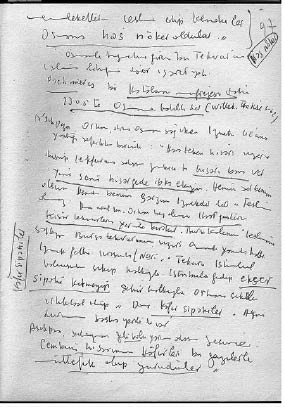
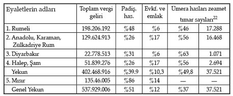
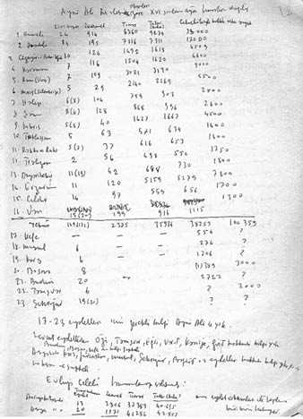
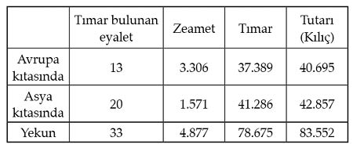

TIMAR SİSTEMİ
Tımar, bir ırk ya da uygarlığın imtiyazı ya da büyük devlet adamlarının icadı olmayan, kendiliğinden ortaya çıkmış bir sistemdir.
Kısa bir tanımla, geçim ve hizmet giderleri için bir kısım asker ve memurlara belli bölgelerin kendi adlarına tahsili yetkisiyle verilmiş vergi kaynaklarına ve senelik geliri 20 bin akçeye kadar olan askeri birliklere verilen addır.1
Bu sistem Osmanlı’ya Selçuklu ve İran Moğollarının mirasıdır. Nizamülmülk’ün askeri hizmet karşılığında dağıttığı iktalar2 Anadolu Selçukluları ve Osmanlı’da ana çizgileri ile bir tımar örneği teşkil edebilecek bazı özellikler taşır. Bu askeri dirliklerle, dağıtılan arazinin üstündeki halkın da sahibi yine hükümdardır. Dirlik sahibi, halktan miktarı ve nevileri kanunla saptanmış bir kısım vergi gelirini tahsile yetkilidir. Yetkisini aşanın dirliği elinden alınır. Hizmet karşılığı geçici olarak verilen dirlikler ancak hizmet şartıyla babadan oğula geçer.
Benzeri bir tımar sistemi Anadolu Selçuklu Devleti’nde de geniş ölçüde uygulama bulur. Fethedilen memleketleri iskân etme, sınır boylarını teşkilatlandırma ihtiyacı burada devlete ait topraklar üzerinde, yine devlete ait olması gereken vergilerin geliriyle geçinen ve donatılan büyük bir ordu kurulmasını gerekli kılar. Keykubad’ın ordu mevcudu yüz bini bulur. Bunların büyük kısmı sipahi denilen ikta askerleridir. 1276’daki İlhanlı işgali, Selçuklu ikta sistemini bozar. Bir kısım eski askeri ikta arazisi, Moğol aristokrasisinin malikâne toprakları haline sokulmasına sebep olur. İran’da, 1303 yılındaki Gazan Han reformu ile İlhanlı iktaları Selçuklu örneğinde yeniden teşkilatlandırılır. Bu teşkilatlanma Anadolu beyliklerinde de yaşamaya devam eder.
OSMANLI’NIN BİZANS’TAN “PRONOİA”YI DEVRALDIĞI İDDİASI DOĞRU MU?
Osmanlı’nın Bizans’ın tımar sistemini aldığını söylemek, Selçuklu tımar sistemini yok saymak ve Türkleri her türlü kültür ve teşkilat mirasından yoksun bir göçebe aşireti saymak demektir.
Elbette Bizans’ta da “tımarlar” vardı, İmparatorlar, Osmanlı Padişahları gibi devlet topraklarının bir kısmını, üstündeki çiftliklerle birlikte istediklerine temlik veya vakfedebiliyordu. Bu tip malikâne toprakları yanında, Osmanlı tımarına çok benzer biçimde askeri vazifeye bağlı toprak tahsisleri Bizans’ın askeri teşkilatının esasını teşkil ediyor ve yaygın olarak uygulanıyordu.
“Pronoia” adını taşıyan bu tımarlarda dirliğin toprağı ve üstündeki köylü, imparatorun malı sayılıyordu. Bunlar mirasçılara geçmiyor, satılamıyor, devir ve vakfedilemiyordu. Kavramın Grekçesindeki anlamı ile Hıristiyanlar için anlamı farklı idi. Kökeninde “Kharistikarion” (askeri hizmet koşuluyla verilen arazi) kavramı da vardı.3 Sonraki pronoia adıyla aldığı anlam ilk anlamını kaybettirmedi. Vasiliev’e göre, “Şartlı yükümlülükler verir, bundan da özellikle askeri hizmet kastedilir. Şartsız değildir ve miras yoluyla devredilmez. Pronoia’yı sahibi satamaz. Pronoia’yı imparator veya onun adına bakanları verir. X. yüzyıla kadar askeri hizmete bağlı toprak anlamında kullanılır. Kesinlik, özel anlamda, XI. yüzyılın ikinci yarısında görülüyor. Komnenos döneminde pronoia vermek olağandı. Haçlıların, Batı etkisinin girişi, özellikle Latinofil [Latinsever] Manuel I (1143-1180) ile birlikte, aktüel Batı Avrupa feodal terimleri Grek ve Bizans’ta gözüküyor.”
İznik’te de Vatatzes4 pronoia dağıtır, askerlik hizmetine karşı toprak verir. Pronoia verilenlerin büyük toprak sahipleriyle çatışmaları olur. Vatatzes köylüyü ve şehirli sınıfı tutar.56
SIRPLARDA VE BOSNA’DA İSE “BAŞTİNA” VAR
Sırp devletinde de malikâneler yanında pronoia sistemi uygulanıyor. Duşan7 kararnamesi ile dirliklerine bir aile mülkü (baştina) olarak sahip olamayan tımar sahiplerinin, satmak, miras bırakmak hakkı yoktur.
Bosna Krallığı’nda ise asiller güçlü olduğundan pronoia yerine baştina sistemi söz konusudur. Bu baştina sistemi Osmanlı egemenliği altında da uzun müddet yaşar.
Halil İnalcık, baştina ile ilgili olarak şunları yazar: “Baş-tina’dan yola çıkalım. Osmanlı fethinden önce Truhelka’nın8 tarifine göre, hükümdarların bir hizmet karşılığında bir şahsa ırsi ve daimi mutlak mülk olarak vermiş oldukları arazi parçası, satılabilir, terk ve ferağ edilebilir. Bütün angarya ve vergilerden muaftır. Baştina sahipliği soylu sınıfı içerir. (Yani Osmanlı temlikinden farklı değil. Elimizdeki en eski Osmanlı temlikname 749’da Orhan’a ait.) Fakat Osmanlılarda temlikler tımar sahasını daralttığı, hazine aleyhine netice verdiği için, olağanüstü hallerde verilir ve zaman zaman genel bir gözden geçirme muamelesine tabi tutulurdu. Bir kısmı aslına, miri arazi haline irca edilirdi. Şu halde, Bosna’da mühim miktara baliğ olan baştinaların, sahiplerinin ellerinde bırakılması, Osmanlı devletince eski devirlerin müesseselerine karşı hakikaten ehemmiyetli bir müsamahayı ifade eder.”9
Fetihten önceki İstanbul’u ve Bizans feodalizmini incelerken bu konuya tekrar döneceğiz.
TIMARIN ÇEKİRDEĞİ: KILIÇ
Her sancakta zeamet ve tımarların büyüklü küçüklü dağıtılış şekli ve kadro mevcutlarının uzun kalması için türlü tedbirler alınırdı: Kılıç denen ve hiç değişmeyen tımar çekirdek kısmı ve buna zamanla eklenen hisseler Rumeli’de 6 bin akçeye kadardı, tezkeresiz tımarların kılıç kısmı 3 bin akçeydi. 6 bin ila 20 bin arasında değişen tezkereli tımarın kılıcı 6 bindi. Anadolu’da tezkeresiz kılıcı 2 bindi. Kılıçların adedi ve yerleri değiştirilemezdi. Her tımar sahibinin bir kılıç yerine atanması gerekirdi. Babaların tımarının ortak beratla iki kardeşe verilmesi hariç, bir kılıç yerine iki kişi atanamazdı. İki kılıç yeri bir kişiye İki bu bir tımar kadrosunun lağvı demektir verilemezdi.
“İbtida kılıcı” 3 bin akçe olan eyalette tımar sahibi ölünce, oğullara ancak bu kısmı verilebilirdi. Öteki tımarları dahil köylerin gelirlerinden çıkarılan hisseler halinde yapılmış zamlar geri alınırdı veya başka tımar sahiplerine yapılacak ilaveler böylece sağlanırdı.
Yani tımarın her akçesine göre, her tımar kategorisi için işe başlamaya esas ayrı bir barem derecesi oluyordu. O tımarda kalınırken elde edilebilecek zamların bir tavanı da vardı. O tavana erişen tımar sahibinin daha fazla terfi edebilmesi için ayrı kategoriden başka bir tımara atanması gerekliydi.
Tımarların tezkereli ya da tezkeresiz, zeamet ve has gibi kategorileri de değiştirilebiliyordu. Örneğin tezkereli tımar ve hisseler ilavesiyle 20 bin akçelik zeamet yapılabilirdi ama bunlar icmal defterlerinde kadrosu olan icmalli bir zeamet sayılmazdı, tımar “mahlûl” kalınca bu hisseler de alıkonurdu. Gerçek (icmalli) zeametlerin kılıçları 20 bin akçelik olduğundan 100 bin akçeye kadar çıkabilir, hisselerle daha sonra alınırdı. Geliri 100 bin akçenin üstünde olan ise hastı.
Böylece kılıç miktarına dönüş, tımar sipahiliğinin nesiller boyunca aile mülkü halinde güçlenmesine engel olur. Esasen incelemeler tımarların elden ele büyük bir süratle devredildiğini gösteriyor. Bunlar yeniden tayin, terfi, feragat, mübadele ve mazuliyet yollarıyla gerçekleştiriliyor.
Dirliğinden hoşnut olmayan tımar sahibinin, onu başka tımarla değiştirmesi yahut daha iyisini bulmak umuduyla tımarı başkasına devredip mazuller arasında fırsat gözlemesi ve bu ümitle seferlere eşmesi sık sık görülmüştür. Terakki sağlamak için bile ve bahane ile tımarlardan feragat edip bir diğer tımara talip olanlar çoktur.
Hayatta olan zaim ve tımar sahiplerinin çocuklarına dirlik vermek âdet değildi. Ancak ihtiyar sipahi oğluna yalnızca kılıç kısmını devredebilirdi. Yalnız atadan ve dededen “ocak” ve “kademi yurt” olan mülk tımarlarında yurdun bütünlüğü bozulmazdı.
Sefere eşebilecek yaşı geldiği halde, babasının ölümünden sonra yedi yıl tımar talebinde bulunmayan oğul, haklarını yitiriyordu.
MALİKÂNE SİSTEMİNDEN OSMANLI TIMARINA: FEODALİTEYİ ÖNLEME
Sahib-i arz da dense, tımar “vazifeye bağlı maaş” niteliğindedir. Mülkün geliri değildir. Sipahinin hizmete yarar erkek evlatlarından birine veya birkaçına tımar verilir. Ama mutlaka aynı tımar değildir ve kıymeti de düşüktür. Sipahi tımarının “kılıç” denen ve bir başlangıç kadro maaşı teşkil eden çekirdek kısmı var. Gösterilen yararlılığa göre ilerleme zammı yapılıyor. Bu büyüme evlada tam ve aynen intikal etmez. Böylece tımar arazisinin zamanla türlü fırsatlardan faydalanılarak büyütülmüş olan şekilleriyle bir aile mülkü halinde nesiller boyunca aynı soydan gelen kimselerin elinde kalması ve büyümesi önlenmiş olur. Has ve zeamet biçimindeki büyük tımarların sahibi olan vezir ve beyler sık sık değiştirilmekte olduğundan, değişen sahiplerinin bu tımarlarla ailevi bir ilişki ve yakın bir ilgi kurmaları olanaksız bulunmaktadır.
Fakat askeri vazifelere bağlı dirliklerin hepsi bu gibi özellikler taşımıyor.
EŞKİNCİLİ10 MÜLKLER VEYA MÜLK TIMARLARI
Devlet, çeşitli hak ve resimleri toplama yetkisini, tımar sahibine bütün hayatı boyunca, sonra da mirasçılarına tam bir mülk halinde tasarruf edilebilecek bir gelir halinde bırakır. Bu gibi haklar devletten vaktiyle bir mülk olarak satın alınmış veya olağanüstü durumlarda bir hizmete bağlı olmayarak bağışlanmış serbest mülkler oldukları halde, askeri hizmet şartı zamanla devlet tarafından mülk sahiplerine zorla kabul ettirilir. Bu nedenle mülk tımarlarının sahibi, bizzat sefere gitmek veya cebelu11 yollamak zorunda kalır.
Bu hizmetler yerine getirildiği takdirde, devlet mülk tımarlarına el koymaz. Hizmetleri yerine getirmeyenlerden dirlikler alınır. Devlet tımarın yalnızca bir yıllık gelirine el koyar. Sahibi ölünce bütünüyle varsa erkek evlada, yoksa mirasçılarına verilir. Onlar da payları oranında cebelu giderlerine katkıda bulunur. Bunlar serbestçe satılabilir. Satın alan aynı yükümlülükleri taşır.
Eldeki kayıtlar, eşkincili mülklerin Osmanlı’ya daha önceki Anadolu beyliklerinden geçtiğini gösteriyor. Osmanlılar kendilerine Anadolu beyliklerinden geçen ve az çok kuvvetli bir soy asaletini sürdürmekte olan bu tip tımarları, özellikle bazı Doğu Anadolu sancaklarında olduğu gibi gerekli gördükçe muhafaza eder. Hatta Rumeli’de, Bosna’da olduğu gibi, bazı Hıristiyan beylerin ve soyların ellerinde bırakılmış olan dirliklerin de böyle aile mülkü tımarlar haline geldikleri görülür.
YURTLUK VE OCAKLIK
Doğu Anadolu’nun fethinde hizmet ve itaatleri karşılığında bazı eski emirlere kimi sancak ve haslar “yurtluk ve ocaklık” olarak temlik edilirdi.
Belli sayıda cebelu ile sefere gitmekle yükümlü tımar sahipleri ise gelişigüzel azledilir, sürülür. İhanette bile yurtları oğul ve akrabalarına verilirdi.
Fakat zamanla, fırsat olunca sipahi tımarına yaklaşılarak kayıt ve yükümlülükler getirilir, genel tensikat derecesinde birçok eşkincili mülk kaldırılırdı.
HIRİSTİYAN SİPAHİLER
İnalcık’a göre, “Osmanlı istilasının mahiyet ve esprisine ait eski kanaatlerde bir hayli değişiklik yapmak ve bilhassa bu istilayı bir haçlı seferi mistiği içinde Hıristiyanlık dinini ve Hıristiyanları yok etmek için harekete geçmiş bir taassup dalgası halinde görmekten vazgeçmek lazımdır. Hakikaten, elde mevcut arşiv vesikaların çoğu, Arnavutluk için olduğu kadar, fethe ait bir tarihe ait olmadıkları halde bu memleketlerin feth ve ilhakından bir iki nesil sonra dahi hâlâ Hıristiyanlık dinini muhafaza eden sipahi beylerine ait misalleri ihtiva eder…”
“Mesela Murat II devrinde fetihten 20-25 sene sonra (1431/32) Arnavut sancağının tahrir sonuçlarını özetleyen deftere412 göre bölgede mevcut 335 parça tımardan 100 kadarı Saruhan, Canik, Bolu ve Engürü’den ‘sürülüp getirilmiş’ Türk soyundan sipahilerin elinde… 56 tımar eski Hıristiyan-Arnavut beylerine bırakılmış. Ayrıca bir metropolit ile üç piskoposa da birer tımar verilmiş. Geriye kalanlar Padişah ve sancakbeylerinin kullarına veya adamlarına dağıtılmış…” Werner bu bilgiyi tekrarlarken bir de ekleme yapar: “Bu da % 16 tutmaktadır. Bunların 19’u babadan oğla geçmişti…”13
“(1454/55) tarihinde Teselya’da mevcut 182 tımardan 36’sı Vulçitrin, Piriştine tarafında 170 tımardan 27’si, Vidin bölgesinde 185 tımardan 18’i, 1469 defterine göre Bosna ve Hersek bölgesinde 467 tımardan 111’i Hıristiyan sipahilerin elindedir”14
Avusturyalı Osmanlı tarihçisi Paul Wittek, uç kültürünün, Osmanlıları fethedilen yer halklarına tam bir müsamaha içinde yaklaştırdığını ve kaynaşmayı kolaylaştırdığını söyler. “Fetihlerin gazi karakteri sayesindedir ki, ne Anadolu’da ne de Balkanlar’da bir kültür inkıtaı (kesintisi) olmamıştır… Osmanlıların taarruz ettikleri memleketlerin uygarlığına o derecede intibak etmeleri, akritojların (Bizans sınır askeri) kitle halinde onlara iltihakını ve hisarların ve küçük şehirlerin kendiliklerinden teslim olmalarını daha kolay bir hale getirmiştir.”15

Doğan Avcıoğlu’nun elyazmalarında Hıristiyan Sipahiler.
PALAPANİS SORAR: “BİZ SİZİN PEYGAMBERİNİZE İNANIYORUZ, SİZ NEDEN BİZİMKİNE İNANMIYORSUNUZ?”
Halil İnalcık, Romen tarihçi İorga’dan şu alıntıyı yapar: “Osmanlılar bir kavim olarak değil, bir ordu, bir hanedan, bir hâkim sınıf olarak ortaya çıktılar. Bizans, Slav ve Osmanlı nizamları bir tek bütün içinde kaynaştı. İdareciler nadiren Türk menşeinden idiler. Subaşı, bey, kefalya, eski knez, voyvoda veya onların yakın akrabası veyahut İmparatorluğun başka bir eyaletinden gelmiş bazen aynı sıfatta eski bir Hıristiyan’dan başka bir şey değildirler.”
Mehmet Neşri ve Âşık Paşazade Hıristiyan sipahilerden “kâfir sipahiler” diye söz ederler. 1355’te Osmanlılara esir düşen Selanik başpiskoposu Gregory Palamas mektuplarında her yerde Hıristiyanları tam bir serbesti içinde gördüğünü yazar. Orhan’ın oğlu İsmail, Hıristiyan dini hakkında ona serbestçe sualler sordu. Sonra bizzat Sultan Orhan, Palamas ile ulema arasında genel bir tartışma yaptırır. Bu tartışmayı Orhan’ın doktoru Tarotines kaydeder. Toplantıya başkanlık eden Balaban (Palapanis) sorar: “Biz sizin peygamberinize inanıyoruz, siz neden bizimkine inanmıyorsunuz?” Palamas’ın başka bir tartışmasını birisi şöyle bağlar: “Bir zaman gelecek biz hepimiz fikirlerimizde birleşeceğiz.”16
Kosova ve Anadolu savaşlarında da bir hayli Hıristiyan bulunur. Murat I’in ordusunda önemli sayıda Hıristiyan yardımcı kuvvet vardır. Kosova savaşında hayli Hıristiyan vardır. Timur’un tarihçisi Nizameddin de bunu yazar: Balkan beyleri Ankara Savaşı’na katılmıştır.
Teselya’nın Tırhala, Fener ve Agrafa livalarını kapsayan ve Turahan Bey oğlu Ömer Bey’in sancakbeyliğinde yazılmış olan defterlerde (fetihten 60 yıl sonra) Hıristiyan tımarları vardır. Tırhala vilayetinde (nahiye) 1 mirliva hassı, 29 eşkinci tımarı, 24 müstahfaz tımarı; Fener vilayetinde 1 subaşı hassı, 60 eşkinci tımarı olmak üzere, 9 müstahfaz tımarı; Agrafa vilayetinde 1 subaşı hassı, 60 eşkinci tımarı, toplam 182 tımardan 36’sı Hıristiyan sipahilere aittir. Bu 36 Hıristiyan tımarının dışındakiler Evrenos Bey veya Turahan Beyle gelmiş kimselere veya gulam-ı mirlere (bey kullarına) ve kapıkullarına verilmiştir.17
RUMELİ’DE ARİSTOKRATLARA KARŞI KÜÇÜK FEODAL BEYLER DESTEKLENDİ
Werner, Hıristiyan Sipahilerin ortaya çıkışını İnalcık’tan biraz daha geriye, Mehmet I dönemine götürür: “Hıristiyan sipahilerin izlerine özellikle 1413-1421 arasında Batı Bulgaristan’daki Visoka ve Znepolye bölgelerinde rastlıyoruz. Defterlerden birinde 5 Bulgar’ın küçük soylu ya da köylü sınıfından geldiği yazılıdır. Türklerin yolunda yararlılıklar gösteren bu Bulgarlara bu nedenle tımarlar dağıtılmıştır.” Ve bir de saptama yapar: “Sultanlar, tebaalarının savunma gücünden yalnız akıncı değil, martolos, voynuk ve yeniçeriler olarak da yararlanmak istiyorlardı.18 Yüksek soyluların sürekli anti-Türk faaliyetleri olanları genelde küçük Hıristiyan feodallerine yaklaştırıyordu ve Bulgaristan’da eski aristokrat ailelerden sadece birkaçı tımar elde edebilmişti.”19
Yine Werner’in Halil İnalcık’tan aktardığına göre, Bulgaristan, Sırbistan ve Bosna’dan farklı olarak Arnavutluk’ta kapalı merkezi devlet düzeni yoktu. Osmanlı, ferdi feodal beylerle karşı karşıyaydı, bunlarla ittifak kuruluyor, kendilerine tımar veriliyor ve eski inançlarında serbest bırakılıyorlardı. Hıristiyan sipahilerin geçmişte sahip oldukları malların sadece bir kısmı ellerinde kaldığı için, Türk sipahileri gibi hızla ücretli asker durumuna düştükleri kuşkusuzdu. Feodal mülkiyetin büyük olması, toprak kayıplarının inanılmaz derecede büyük olmasına sebep olmaktaydı. Çünkü askerleştirme, yani tımarlara dağıtma önüne geçilmez bir düzeydeydi. Bu, temelde yüksek soyluların Arnavutluk’ta muhalefete geçmesine varacak kadar özel mülkiyet veya tımarların ortadan kaldırılması demekti. Sırbistan’ın kuzeyinde Hıristiyan sipahilerin sayısı Müslümanlarınkinden daha çoktu. 1467-68 yılına ait bir defterde 54 Sırp tımarına karşı 32 Türk tımarı görüyoruz.
Bosna’da başlangıçta yalnız Üsküp sancağında Türk sipahi atanır. Ancak hemen 1469’da 135 tımardan 111 tanesi Hıristiyanlarındır. Arnavutluk gibi Bosna-Hersek’te de Osman-lı mülklerine el uzatılsa bile, küçük soyluluğa dayanır. Küçük soyluluk, ne yasal, ne de sosyal güvencesi olan bir mal varlığı elde edebiliyordu, Beylerbeyini dinlemezse tımarı yıkılır, reaya olurdu (N. Filipoviç, Odzakluk tımarı, s.257-260). Türk sipahi de aynı durumdadır. Ölçü Sultan’a bağlılık ve verimliliktir. XV. yüzyılda Rumeli sınır bölgelerinde Hıristiyan sipahi sayısı yüksektir. Örneğin Nova Bado gibi stratejik ve ekonomik önemi yüksek olan yerlerde ise buna güvenilmediğinden yalnız Türk ve İslam sipahi konuyordu.
MÜSLÜMANLIĞA GEÇEN DAHA BÜYÜK TIMAR ALIR
Hıristiyan sipahilerin tımar geliri düşüktü. Bulgar Stayko gibi yılda 3883 akçe gelir getiren bir tımar nadirdi. Arnavutluk’ta 56 tımardan 24’ü 200 akçe getiriyordu. Hersek’te 430 ila 5956 akçe arasında. Kuzey Yunanistan’da en yüksek 3615, en düşük 262 akçe. Mehmet I’in tımar verdiği 5 Bulgar’ın geliri ise yüksekti: 1380, 1635, 2024, 2122 ve 2883 akçe. Mutafçiyeva’ya göre Murat II gelirleri kısmıştı ve üst sınır 3 bin akçeydi. Bu sınır XV. yüzyılda beş bine yükseltilir. Sofya’da 40 kg buğday 6 akçe. Tırnova’nın Posova köyünde ortalama çiftçi geliri 426 akçeydi. Buna göre sipahinin durumu daha iyiydi. Ama atını, silahını, üniformasını karşılamak zorundadır. Bu düşük ekonomik düzey sipahiyi, merkezi kuvvet reayayı sınırı aşkın talepleri önünde koruduğu sürece, yaşam düzeyini düzeltmeyi yalnız savaşla olanaklı bulan küçük, vurguncu hırsa sahip feodal bey haline getirir. Slav soylularının tımar bağışı olarak din değiştirme sorunuyla karşılaştıkları gibi, Hıristiyan sipahilerde de İslam dinini kabul ederek daha büyük tımar bağışı elde etme davranışlarına sık rastlanır.
Eşit sosyal ve ekonomik durumları Türk-İslam ve Slav-Hıristiyan sipahiler arasında ister İslam, ister Hıristiyan olsun, gerek reayayı ve gerekse yüksek feodal soyluluğu ortaklaşa hedef alan sınıfsal bir dayanışma oluşturur. Küçük hizmet soyluluğu kuşkusuz doğuştan gelme imtiyazlı bir düzeye sahip değildi. Her sipahi reaya olabilir. Sınır savaşında kendini gösteren her çiftçi de sipahi olabilir. Mutafçiyeva, Mehmet I zamanında tımarlı sipahi sayısını 10 bin tahmin ediyor.20Murat II döneminde tımarlı sipahinin daha da arttığı söylenebilir, çünkü o, mülk ve vakıf gibi öteki iki feodal kesimin üstünlüklerini ortadan kaldırır.
SOYLULUĞA İMTİYAZ
Birçok Balkan ülkesinde ülkenin eski sahibi Hıristiyan beylerin soyundan gelir, hizmetleri ne kadar büyük olursa olsun Hıristiyan reayadan seçilip sipahi olan yoktur. İslam ya da Hıristiyan, eski bey sınıfı mensupları içinde sipahiliğe seçilmemiş olanlar bile bazı defterlere “kadimi sipahiler” veya sipahizadeler diye ayrı zümreler halinde yazılıp reayaya karıştırılmak istenmiş. Ve içlerinden birçoğu gerektiğinde oradan alınarak özel birtakım teşkilat ve imtiyazları zaten askeri birer zümre olan Voynuklar, Martoloslar, Eflâklar ve Doğancılar arasında dağıtılmışlardır.21
Sınır boylarında Hıristiyan sipahi veya İslam olmuş evlatları yoluyla etkin örgüt kurulması başarılır. Ayrıca Bayazıt II dönemi defterlerine göre, Trabzon’dan yerli Hıristiyan beyler İmparator ile birlikte Rumeli’ye sürülür. 207 tımardan yalnız 21’i özel durumu bulunan Torul bölgesi eski sipahilerinden olup, Osmanlılara sığınmış veya insan toplayıp tımarlarını şenlendirme görevini yüklenmiş olan eski Hıristiyan Gürcü beyleri elinde bırakılır. 25 tımar sahibi ise Rumeli’den sürülen yeni Müslüman olmuş eski Hıristiyan-Arnavut beylerindendir. Buna “iyi düşünülmüş bir iskân siyaseti” deniyor. Trakya’dan sürülenlere de orada tımar verilmiş olması büyük ihtimaldir.
ÜRETİMİ KORUMA AMAÇLI VERGİLER
Çift bozanın zorla tarlasının başına getirilebilmesi ve çift bozan resmi alınması söz konusudur. Ama bu feodal düzende olduğu gibi kişisel ve özel bir tabiiyetin ve sahipliğin sonucu değil, devlet nizamıyla ilgili bir amme hukuku müessesesidir. Amaç üretimi korumaktır. Sipahilerin birbirinden raiyet çalması yasaktır. Kaçak köylüyü iade şarttır.
Elinde bir “çiftlik” yeri olan reaya, Bursa muduyla 4 mud ekmekle yükümlü, hiç ekmezse bedel-i öşür 50 akçe öder. 2 mud ekerse 25 öder, 4 mud ektikten sonra reaya serbest kalır, istediği işle meşgul olabilir.
Toprağı bırakıp başka sipahi yanında çalışan veya arabacılık, gemicilik, balıkçılık, ırgatlık, ticaret gibi işler yapanlar 10 yıl içinde göç ettirilebilir.
Çiftbozan resminin bir hususiyeti de, seyyit, sipahizade, berat sahibi, yağcı ve yörük gibi askeri sınıf mensuplarıyla şehir sakinlerinin bu mükellefiyetten muaf olmasıdır. Bu zümreler tarım yaparken toprağın öşür ve resmini verirler, sonra istedikleri zaman tarımı bırakabilirler.
Hastalık, yoksulluk ve ihtiyarlıktan dolayı âciz kalandan da bu resim alınmaz. Zaten sipahi 3 yıl boş kalan toprağı başkasına verebilir.
GERDEK VERGİSİ (BAŞLIK PARASI) SİPAHİYE VERİLİR
Tımar sahibi, tımarına mensup kadınların evlenmeleri ile arus, gelin veya gerdek resmi alır. Osmanlı kanunnamelerinin gerdek resmi ile ilgili hükümlerine göre, ailesi zengin bakireden 60 akçe, dul veya boşanmıştan 30 akçe. Orta halli kızın resmi 30-40, fakirin 10-20 akçe. Hıristiyan kızların vergisi ise Müslüman kızların yarısı oranındadır. Bakire kızın arusiyyesi (gerdek vergisi) her ne yerden göçerse göçsün, güvey tarafından o kızın ebeveyni hangi sipahinin raiyyeti ise ona verilir.
Bütün vergileri sipahi alır. Devlet nerede olursa olsun genellikle koyun resmi gibi bazı vergileri kendi tahsil ediyor. Ayrıca devlet savaş gibi olağanüstü durumlarda bütün tebaasından her türlü hizmet ve yardımı istiyor.22
GELİŞMİŞ OSMANLI FEODALİZMİ
Mutafçiyeva, mülk sahipleri olarak yedi kategori öne sürer:
1) Osmanlı hanedanının üyeleri, en başta kızları, kocaları ve çocukları,
2) Vezirler,
3) Yüksek memur ve birlik komutanları,
4) Akıncı subayları ve çocukları,
5) Anadolu beyleri,
6) Saray görevlileri,
7) Devlet sorumluluğu yüklenen şeyh ve dervişler.
Bu arazilerden sağlanan gelirler tımarlardan sağlananların birkaç katını buluyor, genellikle 170 bin akçe tutuyordu. Mülk sahiplerinin toprakları üzerinde sınırsız kullanım hakkı vardı. Mülk sahipleri bol bol vakıf kurmaktaydılar. Vakıf, ekonomik açıdan özel bir toprak kategorisi değildi. Çünkü hukuksal bir irade beyanıyla mülkün dışında tutulmakta, ama bununla yeni bir mülkiyet biçimi doğmuş olmaktaydı. Sultanlar, başlarda mutlak mülkiyet nesnesi sayılan toprakların vakıflara dönüştürülmesinden yana oldular. Ve bu girişimi iyi bir örnek olsun diye miri araziyi bağışlama yoluyla geliştirdiler. Böylece tımar sisteminin yolunu da açmış oluyorlardı. Ama Bayazıt I zamanında sıkı bir merkezileştirme siyaseti uygulanmaya başlandıktan sonra, mülk sahipleri ya da beyler, ailelerine bırakılacak mirası ve ekonomik temelleri güvenceye almak için giderek vakıflar kurmaya ve arazilerini vakıflara dönüştürmeye başladılar.23Bu çeşit toprak mülkiyetinin sonraki yıllarda ne gibi sorunlara, veliaht kavgalarına ve padişahların şehzadelerini öldürmelerine yol açtığını ilerleyen bölümlerde göreceğiz.
SERBEST TIMARDA ÖZERKLİĞİN SINIRLARI
Padişah hasları ile sultan ve vezir vakıflarından başka; vezir, beylerbeyi, sancakbeyi, nişancı, defterdar, divan kâtipleri, çavuşlar, çeribaşıları, subaşılar ve dizdarlar gibi yüksek rütbeli idare amirleri ile diğer memur ve askerlerin has ve zeametleri, idari ve mali bakımdan bazı imtiyazlara sahip “serbest tımarlar” olarak muamele görmektedir.
Benzeri tımarlarda, genellikle rüsum-ı serbestliği denen, bazı vergiler, tam ve müstakil olarak dirlik sahibine aittir. Oysa tımarların büyük çoğunluğu bu vergilerin tahsil hakkına tamamen sahip değildir veya tabi bulundukları serbest tımar sahibiyle paylaşma durumundadır. Bunlara “serbest olmayan tımar” demeliyiz.
Bazı vergiler zamanla bütün tımar sahiplerine uygulanır: Erkeklere; gelin resmi, tapu bedeli, koruculuk hakları; kaybedilmiş hayvanların sahiplerine tesliminde alınan harçlar, koyun, otlak ve kışlak resimleri gibi. Ama serbest tımarları imtiyazlı kılan vergiler de vardır.
Cürüm, cinayet yahut “cerime” veya “kanlık” denen para cezalarında şer’i kısas uygulanmamışsa, adam öldürmeden zenginliğe göre 50-100 ila 400 akçe cerime alınır. Zina halinde evli erkekten 40-400 akçe, at hırsızından eli kesilmişse 200, sığır uğrulayandan 100 akçe alınırdı. Sopa cezasında vurulan her değnek için alınan cerime miktarı 1 akçedir.
Herhangi bir cezanın uygulanması için önce mahkeme kararı gerekir. Serbest tımarlarda; suçluları takip, tevkif ve kadı kararı alındıktan sonra cezaların tatbik yetkisi ile para cezalarının tamamını kendi adına tahsil imtiyazı serbest tımarlarda dirlik sahibinin elindedir.
Oysa serbest olmayan tımarlarda, toprakları üstünde işlenen suçlardan alınan ceza, bağlı bulunduğu sancakbeyleri veya subaşının adamlarıyla yarı yarıya paylaşılmış durumdadır. Hatta bazı yer ve devirlerde bunların tamamı sancakbeyine aittir.
Büyük devlet memurları tımarlarının sahipleri sık sık değişmediği için ve oğullara da geçmediği için, serbestliğin, merkezi devlet otoritesi için rakip ve tehlikeli bir asalet sınıfı teşkiline elverişli olmadığı anlaşılır. Serbest tımar ayrıca kaçak köle ve cariyeleri üç ay saklar, sahibi çıkmazsa satıp bedelini alabilir. Sahibi çıkarsa, ondan besleme, nafaka ve “müjde” harcı alır.
Sancakbeyi serbest olmayan tımarda, çift resmini tımar sahibiyle belli oranda paylaşır. Ayrıca av hayvanlarının postları da sancakbeyine aittir.
Gerek serbestte, gerek serbest olmayanda kır bekçiliği (deşt-banlık) yetkisi ve bu münasebetle alınacak cezalar sipahilere aittir. Örneğin öküzü başkasının ekinine girene beş sopa ve beş akçe ceza verilir.
Sipahi tımarında yazılandan fazla gelir elinden alınabilir. Bu nedenle sipahiden her zaman “defter sureti” sorulabilir ve beratına yazılı akçe yekûnunun üstündeki gelir fazlası alınabilir.
Tahrirler sırasında da gelir fazlası varsa, bir kısım reaya sipahinin elinden alınıp başkasına verilebilir veya fazlası tahsil edilebilir.24
TIMARLI SİPAHİ FEODAL BİR SINIF MIDIR?
Sipahi üzerinde sıkı denetim ve müdahale vardır. Sipahi tımarı bir küçük senyörlük gibi siyasi, maddi ve adli bakımdan dışarıya kapalı bir bütün teşkil etmekten çok uzaktır. Sipahi tımarlar sık sık el değiştirebilir. Bu nedenlerle tımar sipahi sınıfı, mahalli bir soy ve toprak asaleti haline giremez.
Sipahiliği avam halka kapalı ve imtiyazlı bir sınıf halinde bulundurmak için türlü tedbirler alınır. Ama kuruluş devrelerinde, kadro vermeden daima dışarıdan tamamlamak zorunluluğu çıkar. Özellikle yüksek kademeler köle ve devşirmelikten gelme alelade kişilerle başlar.
Fetih devrinin yarattığı hareketlilik, savaşta yararlık gösteren yiğitlere, yükselme olanağı verir. Göçebe Türkmen aşiretlerinin hayat tarzı onları cengâverliğe hazırlamış olur. Yaya ve müsellem gibi çiftçi askerlerle akıncılar da devirlerine göre mükemmel silahlandırılmış ve harp tecrübesi olan gruplardır. Bu zümrelerin mensuplarından bir kısmının ilk zamanlarda sipahiliğe geçmiş olması tahmin edilebilir.
Büyük tımarlarda köleler arasından yetiştirilmekle birlikte, cebelu yoluyla gerçek sipahilerle savaşa katılan kişilerin de sipahi kadrolarını doldurmaya aday oldukları ileri sürülebilir.
Öte yandan daha sonraki devirlerde de “reayaya ata binip kılıç kuşanmak yoktur” ilkesine rağmen, raiyet için askerlik ve silah taşıma ehliyetsizliği mutlak anlamda anlaşılmamalıdır. Zamana ve ihtiyaca göre devlet gerekli gördüğünde halktan asker toplamıştır: Örnek olarak donanma için cenkçi azapların toplanması gösterilebilir.
YÜKSEK MEVKİLER SARAY VE OCAK MENSUPLARININ TEKELİNDEDİR
Beylerbeyi, sancakbeyliği, çeribaşılık, alaybey ve zaimlikler gibi yüksek rütbeli tımar sahipleri ve kumandanlıklar için şu kaynaklar var:
Saray erkânı ile Sultan’ın merkez ordusunun yeniçeri ve sipahi bölüklerinin yüksek rütbeli zabitler ve diğer mensuplarının terfi edebilmek ve bu suretle kadrolardan yeni yetişenlere yer temini için “sancağa çıkmak” âdeti vardır. Yeniçeri ağaları 500 bin, emir-i âlemler 450 bin, kapucubaşı, emir-i ahur denilen at bakıcısı, çeşnigirbaşı gibi saray ağaları 350-400 bin; Padişah’ın merkez ordusunun sipahi oğlanları, silahdar, ulufeci gibi bölüklerin ağaları 200-300 bin akçelik haslar şeklinde tımarlar ve ona göre vazifeler alırlar. Yeniçeri ortalarının veya acemi oğlanlarının yayabaşı adını taşıyan subaylarına verilen tımarlar 20-30 bin akçedir. Bazı tensikat devirlerinde yeniçeri neferleri bile, ulufelerini bırakıp tımara geçince 9 bin akçelik alır. Cebeci, topçu, saraç ve nalbant gibi padişahın hassa ordusundan kişiler gündelik ulufelerinin her 1 akçesi 1000 akçe sayılarak tımara çıkarlar.
Büyük tımar sahiplerinin ölümü dolayısıyla adamlarına veya oğullarına verilecek dirlikler için de kurallar var. Vezirlik rütbesinde olan kethüda, kapucubaşı, emir-i ahur, hazinedar, uluğeri, çeşnigir, kapıcı kethüdası gibi genellikle köleden yetişme kişilerin ve 5 nefer subaşılarına büyük tımarlar veriliyor. Beylerbeylerinin adamlarına da beylerinin vazife halinde veya azul iken ölümüne göre büyük tımarlar veriliyor. Beylerbeylerinin bir oğlu kalmışsa 40 bin, iki veya üç oğlu kalmışsa her birine 20-25 bin akçelik tımarlar veriliyor. Sancakbeylerinin ileri gelenleri ölünce, tek oğullu ise 30 bin akçelik zeamet, 2-3 oğlu varsa her birine 10 ila 15 bin akçelik tımar veriliyor. Daha aşağı derece sancakbeyleri oğullarının biraz daha az.
20-50 bin akçelik tımar mutasarrıfı subaşıların ve yoldaşlıkta can ve baş verenlerden ise henüz tımar sahibi olmamış bulunan uç nefer oğullarına 4-5 ila 6 bin akçelik tımarlar veriliyor. Daha önce tımar tasarruf etmiş oğullara “terakki” adı altında 2-3 bin akçe zam yapılıyor. Evlerinde kendi eceliyle ölen subaşıların oğullarından ise yalnızca ikisine biraz daha düşük gelirli tımar verilir.
Görülüyor ki, tımar kadrolarında en büyük selahiyetlerle en yüksek dereceleri işgal eden mevkiler için, babadan-dededen beyzade ve yerli bir sipahi sınıfı için hemen hiçbir yer yoktur. Bu mevkiler, tamamıyla kul ve devşirmelikten yetiştirilme, asil olmayan kapıkullarının tekelindedir.
Yerli sipahi sınıfı, ehliyet ve hizmet ölçüleriyle önemli yükselme sağlayamıyor. Yüksek yerler saray ve ocak mensuplarının tekelinde. Bu durum, yerli sipahilerin köklü bir asalet sınıfı haline gelememelerine yol açar.
REAYANIN TIMAR ALABİLMESİ İÇİN TEK YOL
KAHRAMANLIKTIR
Küçük tımarların dağıtımında beylerbeyinin yetkileri büyüktür. Kendi tuğralarıyla düşük gelirli tımarları doğrudan verebilirler. Daha büyük gelirliler için de “tezkere” verip teklif yapabiliyorlar. Tayin beratını İstanbul verir. Tezkereyi alan sipahi, 6 ay içinde İstanbul’a gidip beratı almak zorundaydı, yoksa tımarın gelirinden yararlanamaz. Tezkeresiz tımarın geliri 6 bin ila 3 bin akçe arasında değişir.
Tımar berat resmi verilerek İstanbul’da her bin akçe için 25 akçe alınır. Terakki ve berat terakkilerinde, padişah değişince yarısı alınır. Beylerbeyi atamalarında 6-12 bin akçe berat resmi alır. Bu işle meşgul çavuş ve kapıcıbaşıları ise 7-15 bin akçe alır.
Reaya zümresinden biri için tımar sahibi olmak çok güçtür. Bu hususta mevcut tek yol da, gönlünde kahramanlık olan “garip yiğitlerin”, “sipahi hizmetkârı” olup seferlere giderek veya sınır boylarındaki askeri harekâtla, “kal’e fethinde bayrak dikmek”, “yarar diller (esirler) ele geçirmek ve başlar kesip defaatle yararlılığı ve dilâverliği görülmek” gibi büyük başarılar sağlanmasıdır. Ancak bu takdirdedir ki, serhat beyleri veya seraskerler tarafından devlet merkezine gönderilecek “yoldaşlık defterinde kayıt gerekli tekliflerin de bulunması şartıyla raiyyetlikten kurtulup ‘ibtida beratı’ almaya müstehak addedilebilirdi”. Bu suretle tımara hak kazandırılan “ibtida beratlarının” padişah beratı olması lazımdı. Bu usule “mahall-i himayet”ten tımar tevcihi denirdi.25
OSMANLI FEODALİTESİNİ ANGARYA AÇISINDAN
AVRUPA İLE KIYASLAMA
Senyörün doğrudan doğruya kendi nam ve hesabına işletmek için ayırdığı Fransa’da “domaine”, “réserve”, İngiltere’de “manoir” denen büyük çiftlikler var. Bunlara “hassa çiftlik” denebilir. İşlenebilir toprakların yarısı veya dörtte birine ulaşabilmiştir. İşletici için kalabalık bir işçi zümresine ihtiyaç var. Oysa tarım işçisi bulmak güçtür. Roma’da olduğu gibi köle de olmaması nedeniyle yeni bir usul bulmak gerekmiştir.
Senyörün hassa çiftliği dışındaki toprakları, üretim araçları ile birlikte küçük köylü işletmesi (“manse”) teşkil edecek biçimde toprağa yerleşmiş kölelere ve himayeye muhtaç çiftçilere dağıtılır. Karşılığında bazı vergilerle birlikte çiftlik, atölye ve tarım tesislerinde angaryalar yüklenir.
Senyörün yalnız toprak sahibi olarak değil, devlete ait askeri ve mali hâkimiyet hak ve yetkilerine de sahip olması bu devrede malikânelerin ekonomik olduğu kadar siyasi ve idari bakımdan da kendi kendine yeter ve dışa karşı kapalı bir düzen olarak örgütlenmesini sağlar.
Senyör giderek hassa çiftliğini daraltır. Dağıttığı topraklardan alacağı kira ve haklarla yaşamaya yönelir. “Gelirci” veya “vergi toplayıcı” olur. Gerçekten de XI. yüzyıldan sonra şehir hayatı ve ticaret başlar. İktisadiyat gelişir. Bu arada hassa çiftliği daralır. Senyör-köylü ilişkileri ve vergilemede değişikliğe yol açar. Angarya önemini yitirir. Serfler hürriyetini satın alır.
Merkezi krallıkların doğuşu senyörün köylü üzerindeki keyfi tasarruflarını sınırlar. Yeni bir hukuki anlayış içinde düzenlemeye yöneliş meydana gelir. Köylünün eline geçmiş bulunan topraklarda örf ve âdetlere bağlı kayıtlarla adi bir tasarruf hakkı (domaine utile) biçimindeki sahiplik anlayışı, özel mülkiyet biçimine yaklaşmaya başlar. Mirasçılara daha kolay geçebilir, devredilebilir hale gelir. Senyörün türlü bahanelerle el koyması ise güçleşir.
Feodal mertebeler silsilesi içinde senyörlerin topraklar üzerinde üst üste türlü haklar aramasına vesile teşkil eden yüksek mülkiyet (rakabe-domaine direct) kavramı da eski önemini yitirir.
Öte yandan hassa çiftlikleri ırsi ve daimi kiracılık şeklinde köylüye verilmek yerine kısa vadeli kira mukaveleleri ile varlıklı çiftçiler veya işadamlarına kesim veya ortakçılıkla işletilir. Böylece toprak daha fazla değerlenmiş olur ve başka alanlarda toplanan para ticari zihniyetle toprağa yatırılır. Bu şekilde zirai teknolojide büyük gelişme sağlanır.
Gelişme, her tarafta birden ve aynı kolaylıkta olmuyor. Senyörlerin toprak sahipliği hâkimiyet sıfat ve yetkileri ile eski rejimin kalıntıları Batı’da bile Fransız İhtilali’ne kadar sürer. Örneğin senyörler, malikâne topraklarının bütününün eski sahibi olduğunu kabul eden hukuk anlayışıyla, çeşitli bahanelerle vârissiz ölen, terk eden, mahkûm olan köylü topraklarına el koyup rezervine alıyor. Toprak intikalinden bizdeki tapu bedeline benzer 12’de 1 oranında resim alıyor. Satış bedelini düşük bulursa kendi ödeyip rezervine katıyor.
Davalara bakmak ve cezalandırmak yetkileri sürer. Malikâne içinde asayişin sürdürülmesi, nöbetleşe tarımın gerektirdiği tedbirlerin alınmasına nezareti, fiyatlara müdahale hakkı da devam eder. Senyör kendi şarabını sattığı sırada köylüye satış yasağı var; avcılık, balıkçılık senyörün tekelinde. Köylü, senyörün değirmen, fırın, elma ve üzüm sıkma tesislerini kullanmaya zorlanır.
Doğu Avrupa’da ise tamamen aksine bir durum söz konusudur. Hububat ihracı üzerine, arazi ve çayırdan açılan toprakları işgal, köylüden satına alma ve el koyma ile toprak alıp, rezervi genişletme vardır. Köylüye daha fazla angarya yüklenir.
OSMANLI TIMARININ FARKLARI
Sipahiye gelince, angarya ile çalıştıran büyük çiftlik sahibi durumunda değildir. XV ve XVI. yüzyıllarda “hassa çiftlik”, hassa bağ, hassa çayır, hassa değirmen veya hassa meyve ağaçları var. XV ve XVI. yüzyıl tahrir defterlerinde bunların kaydedilmiş olması, söz konusu tımarların daha eski devirlerdeki zirai bünye ve teşkilat hususiyetlerinin arta kalmış şekillerini bize nakletmekte. İktisadi ve içtimai şartların müsait bulunduğu zamanlarda klasik şekilleriyle senyör malikânelerinin zirai bünyelerine mahsus zirai düzenlerin Türkiye’deki tımarlarda da vaktiyle mevcut olmuş bulunduğunu göstermektedir.
Defterlerde “kılıç yeri”, “beylik çiftlik” veya “çayır” gibi deyimlerle de kaydedilen ve reayaya mahsus ziraat arazisinden itina ile ayırt edilen bu toprakların hukuki statüsü şöyle:
Genellikle hassa çiftliği bir çift öküzle işletilebilir büyüklüktedir. Bir tımarda birkaç hassa çiftliği bulunabilir. Bu çiftliklerden her birinin sipahiye sağlayacağı çıkar, tımar beratlarında 200 akçe hesaplanabilir. Doğrudan doğruya işletilmezse, ortakçılıkla işletilebilir, hatta bazen bedeli alınarak köylüye devredilebilir ama memuriyet zamanıyla sınırlıdır.
ÇAYIRDA ANGARYA: TARIMLA UĞRAŞMAYA
NİYETSİZ TIMAR SAHİPLERİ
Sınır boylarında ve bazı önemli askeri bölgelerde büyük hassa çayırlarının ve bağların mevcudiyeti ise, bu çayırların otunun biçilmesi veya bağların işlenmesi gibi sorunları ortaya koyar. Dolayısıyla bu bölgelere ait kararnamelerle, reaya için yılın mahdut bazı günlerinde bu işlerde çalışmak mecburiyetinin kabul edildiği görülmektedir.
Bundan da anlaşılacağı gibi beylik çiftlik ve çayırların varlığı ile benzeri toprakların tımardakilerle işgal ettikleri nispetin büyüklüğü köylülerin angarya çalışmalarını zaruri kılacak faktörlerden birisidir. Oysa XVI. yüzyıldan çok önce vuku bulmuş iktisadi gelişimler nüfusun toprak üzerine yerleştirilmesi zorunluluğu ve merkeziyetçi devlet yönetimini mümkün kılan tarihsel ve siyasal koşullar, büyük zirai işletmelerin kurulmasını lüzumsuz ve elverişsiz kılmıştır.
Bu nedenle hassa çiftlikler çok küçülmüş, bazı bölgelerin tımarlarında ise gerçek faaliyet ve gayelerini kaybetmiş biçimde kalakalmıştır. Olasıdır ki, sınırların çok genişlemesi, savaşların çok uzaklarda olması, sefere gidiş geliş müddeti içinde tarımla uğraşmaya vakit bulunamaması bu hususu etkilemiştir. Yeni silahların ve taktiklerin savaşları sipahi için tüketici hale sokması ile bulundukları yere yerleşip tarımla uğraşmaya niyetli olmayan yeni tip birtakım tımar sahiplerinin zuhuru da bu hususta büyük bir rol oynamıştır.
OSMANLI FETHEDİLEN YERLERDE AVRUPA
FEODALİTESİYLE MÜCADELE EDER
Osmanlı fethettiği yerlerde koyu derebeylik izleri taşıyan örf ve âdetler bulur ve onlarla mücadele eder. Bu mücadelede zaman zaman başarısız da olur. Vidin, Niğbolu, Semendire ve Macaristan’da, yeni zaptedilen sancakların örf ve âdetleri ile öteden beri mevcut olan sipahi lehine kolaylıklar uzun süre devam ettirilir.
Osmanlı kanunlarının ot, arpa, saman ve odun salgunları, koyun ve tavuk ikramları da, yabancı bazı angaryalarla (kulluklarla) birlikte devam etmiştir. Şark ve Cenubi Şarki Anadolu sancaklarıyla, merkezden uzak bazı diyarlarda da imparatorluk nizamına aykırı türlü feodal örf ve âdetler yaşamak fırsatını bulmuştur.
Bizzat reaya her türlü denetlemeden uzak, dağ başlarında devleti temsil ederek türlü hâkimiyet, hak ve imtiyazlarını kullanan silahlı bir harp adamı olan sipahilerine karşı, mahalli örf ve âdetlerin kabul edebileceği şekilleriyle, her türlü hizmet ve ikrama itirazsız katlanabilir. Sipahilerin halk nazarında haiz oldukları bu itibarı sonuna kadar istismar edebilecekleri de şüphesizdir.
Bazı bunalımlı anlarda bizzat devlet, sipahi nüfuzunu savunur ve destekler. Kanuni 1458’de, Anadolu Beylerbeyi ve kadılarına ferman yollayarak “Reayanın kendi sahiplerine karşı saygılı olmaları gerekirken, beylerinin emirlerine karşı gelip onları konukluğa bile kabul etmek istemeyişleri cezalandırılması gereken bir kabahattir” diyor.
NAMAZ KILMAYANLARI CEZALANDIRMAK
SİPAHİNİN GÖREVİDİR
Ev ve ambar inşasında, kendi hesaplarını yapacakları ziraat işlerinde onlara yardımcı olmaları; adamlarına, atlarına yiyecek temininde bulunmaları, emredecekleri diğer hususlarda hizmette kusur etmemeleri, bu hususta hiçbir tahdide lüzum görmeden istenmektedir. Ayrıca sipahilerin halk arasında namaz kılmayanları ve uygunsuz halleri olanları cezalandırmak hususunda inzibati hak ve vazifeleri olduğu belirtilmektedir.
Eğer söz konusu ferman gerçekten gönderilmişse, tımar sahibinin yetkilerini sınırlayan hukukun tamamen bırakıldığına hükmetmek gerekir.
Bozok (Yozgat) livasına ait eski bir kanunda şöyle deniyor: “Kulluğa buyurulmuş olan sipahiye, raiyyet el kaldırmaya, eğer kaldırırsa 10 altın alına, eğer sipahi buyruk olmadan ulak isterse, ya davar boğazlatsa, anı dövseler suçlu olmaya… Sipahi raiyyetini incitir ise, raiyyet ol sipahiyi döğerse, cürüm alınmaya…”26
SINIR BOYLARINDA YERLİ “FEODAL PRENSLER”
“İlk padişahlar komutanlara, ahi ve dervişlere geniş muafiyetlerle (immunitas)2728temlik yapmak ihtiyaç ve ananesinin tesiri altında kalırlar. Bu dönemde Rumeli’nin fethi gerçekleştirilir. Sınır boylarında geniş yetkilerle, muhtariyetlerle yönetilecek serbest araziler verilir. İlk zamanlarda onlara ‘feodal’ bir anlayışla kendilerine tabi birer prens olarak muamele yapılır.29
Anadolu beyliklerinden asalet sınıfına mensup birçok kumandan Rumeli’de kendilerine bağışlanmış olan zengin toprak malikâneleri üzerine maiyeti ve halkı ile gelip yerleşir, bu suretle hudut boylarında kudretli ve fütuhat ile alakalı reisler haline gelirler.
Örnek olarak Yıldırım Bayazıt tarafından Mihail oğlu Ali Bey’e Bulgaristan’da Plevne civarında temlik edilmiş olan köyler sayılabilir.”
Barkan, başka bir makalesinde bu örnekteki temlikle ilgili daha fazla ayrıntı verir: “Söz konusu devirlerde ve bu tip temliklerde, mülk sahibinin malikânesi içindeki yetkileri o kadar büyük gözükmektedir ki, bu yetkilere dayanarak Ali Bey kendi emlaki dahilinde bulunan ‘Plevne kasabası keferesini cizyeden, aşar ve rüsumdan affetmek hakkını’ kendinde bulmuştur.30
VERGİ MEMURUNUN GİREMEDİĞİ MALİKÂNELER
Bazı sultan hanımlarla büyük vezirlere bir hayır işine vakfedilmek üzere temlik edilmiş araziyi de serbest mülkler arasında saymak gerekir.
Böylece feodal prensipler ve fütuhatı teşvik arzuları kadar, ülke iskânı ve şenlendirilmesi amacının etkili olduğu temlik ve vakıflar şu özellikleri ile dikkat çeker:
a) Temlikler mülk ve vakıf sahibini idari ve vergi toplamak bakımından büyük bir istiklal içinde bırakır. Temlik muamelesi: Bilcümle hukuk-ı şer’iye ve rüsum-ı örfiyesiyle mefruz’ül-kalem ve maktu’ül-kıdem. Serbest olarak kayd ve tescil ediliyor.
Devlet memurları vergi toplamak ya da herhangi bir başka vesileyle bu malikânelere giremez ve temliknamesinin verilenden fazla varidat zuhur edip etmediğini tahkik ve teftiş için defter yazısı soramaz. Bu nedenlerle, bu gibi mülk sahiplerinin, dışarıdan adam bulup getirmek, yeni köyler kurmak hususunda yetki ve çıkarları vardır.
b) Bu cins topraklar, aile vakfı biçimine sokulmazsa, mirasçılar arasında paylaşılmakta, satın alınabilmekte, vakfedilmekte, borç için haczedilmekte, zevceye kalmakta kayıtsız şartsız mutlak mülktür. Çoğunda askeri hizmet ve başka mükellefiyet de yoktur: Mukabelesinde hizmet teklif olunmamıştır, “mülk-i mevrusları” gibidir. “Silsileleri munkati veyahut ref’ine hükm-i şerif sadır olmadıkça mülkiyet içinde tasarruf iderler.”
c) Malikâne-divanı: Osmanlılara öteki Türk ve İslam devletlerinden geçmiş olan bu sistemde mülk ve vakıflar büsbütün ayrı esaslara göre kurulur. Konya taraflarından başlayıp büyük bir kısmına Doğu Anadolu eyaletlerinde ve Suriye’de rastlanan ve iki baştan tasarruf denilen bu cins mülk ve vakıflar bütün serbest mülk ve vakıflardan farklı olarak, sahiplerine ancak toprağın kuru mülkiyetini geçirmiş olmaktan doğan sınırlı haklar sağlar. Vakıf ve mülk sahipleri yüksek mülkiyeti kendilerine ait bulunan bu toprakları işleyen köylülerden yalnız bir toprak kirası isteme hakkına sahiptir. Mahalli örf ve âdete göre ürünün onda biri, yedide biri, beşte biridir. Bunun dışında toprağın ve üstündeki köylülerin yükümlü oldukları bütün öteki hak ve resimler divani hissesi adı altında doğrudan doğruya devlete, yani orada devleti temsil eden sipahi ya da mültezime ait olur.
Bu durumda her köyün biri divanesine tasarruf eden iki sahibi vardır. Malikâne sahipleri satmak, vakıf veya hibe etmek, vârislere taksim gibi mutlak mülkiyet anlamına gelen bütün haklara sahiptir.
Bu sistem yerli toprak sahipleriyle, fütuhatı yapan devlet temsilcilerini aynı topraklar üzerinde, aynı zamanda tatmin etmenin yoludur. Sistem bölgede çok daha önce uygulanmıştır. İlhanlılarda, bir kısım Selçuklu eyaletlerinde ve Anadolu beyliklerinde bu sistem görülür.
Görüldüğü gibi, arazi hukuku ve tımar usulleri mahiyet itibarıyla birbirinden oldukça farklı biçimdedir. Bu biçimler arasından tipik Osmanlı tımarını bulup geliştirmek için kuruluş devri tarihinin, içtimai ve iktisadi türlü şartlarının ve bu arada imparatorluk idaresinin yeni bir devlet anlayış ve iktidarının hazırladığı olanaklardan yararlanmak gerekmiştir.
TOPRAKTAN ELDE EDİLEN VERGİ GELİRLERİ
Osmanlı tımar sistemi ülkenin askeri ve siyasi gücüyle olduğu kadar sosyo-ekonomik bünyesinin özellikleriyle de ilgilidir.
1527-28 mali bütçesine göre saptanmış tımarların vergi geliri 537 milyon 929 bin 6 akçedir. Bu tımarların %46’sı Rumeli, %56’sı Anadolu eyaletleri grubu, %63’ü Diyarbakır, %38’i Halep ve Şam illeri kaynaklıdır.
Tımar sistemi hiç uygulanmamış olan Mısır geliri hesaba katılmazsa, genel gelirin %49,8’i (Mısır katılırsa %37’si) 37 bin 521 tımar sahiplerinin tasarrufundadır. Bunun yanında vakıflar gelirin %12’sini alır.
Bu tımarlardan 6620’si Rumeli’de, 2614 Anadolu vilayetlerinde, 419’u Şam ve Halep vilayetlerinde bulunuyordu. 37.521 tımardan 9.653’ü kale muhafızı tımarı, geriye kalan 27.868 tamamen eşkinci tımarı idi. Bunların savaşa götürmek zorunda oldukları (cebelu) silahlı ve zırhlı askerlerle, 70-80 bin kişilik atlı bir sipahi ordusu tahmin edilir.
Padişahın Hassa Ordusu yani, Kapıkulu Ocakları 27 bin kişidir.
Sultan ve vüzera vakıfları ise aslında devlete ait olması gereken din ve kültür işleri ile imar ve sosyal yardım hizmetleri götürmek üzere devletin gelir kaynaklarından bir kısmının ayrılıp, devamlı olarak belli hizmetlere tahsisi yoluyla kuruluyordu.
Bunlar hükmi şahsiyeti olan, idari ve mali muhtariyetlerdi. Ayrı bütçeleri vardı ve kendilerine ayrılmış vergileri kendi nam ve hesabına tahsil ediyorlardı. Dolayısıyla vergilerin muhtelif eyaletlerde %26,31 ila 48’i padişah hasları statüsü ile doğrudan doğruya devlet hesabına toplanıyordu. Bu gelirin %21-25’i Mısır, Şam, Halep ve Diyarbakır gibi eyaletlerin hususi teşkilat ve türlü hizmetleri için mahallinde kullanılırken, geriye kalan kısmı merkezi idarece, kapıkulu ocaklarının maaşları, teçhizatı ile saray ve devlet masraflarına gidiyordu.31
Bu vergi gelirlerinin çeşitli eyalet grupları arasında dağılım oranları şöyleydi:

SURİYE’DE EYALET TIMAR GELİRLERİ
Şinasi Altundağ, Suriye eyaleti hakkında şu bilgiyi vermektedir: Eyalet-i Halep, bu eyaletin 6’sı dirlikli ve 3’ü dirliksiz Türkmen sancağı olmak üzere, 9 sancağı vardır:
1- Halep, burası Paşanın idare merkezidir; 98 zeamet ve 295 tımarı vardır; has geliri 817.772 akçedir.
2- Adana, 2 zeamet ve 195 tımarı vardır; has 100.095 akçedir.
3- Kilis, 2 zeamet ve 90 tımarı vardır; has 522.867 akçedir.
4- Azir (Netaic’ül-Vukuat’ta Aziz şeklinde geçmektedir) 2 zeamet ve 195 tımarı vardır; has geliri 280 bin akçedir.
5- Palis (Netaic’ül-Vukuat’ta bu isim geçmemektedir) tımar ve zeameti yoktur; has geliri 220 bin akçedir.
6- Maarra, 86 zeameti vardır.
Defterdar Kethüdasının zeameti 101.933 akçedir.
Tımar Defterdarının zeameti 810.146 akçedir.
Bu mıntıkanın 903 Kılıcı olup, bunun 104’ü zeamet, diğerleri tımardır. Umum geliri 10.022.819 akçe=250.570 kuruşa (Piaster) baliğ olur.
Eyalet-i Şam umumiyetle on sancaktan ibarettir ki, bunun yedisi has, üçü sâlyanedir; zeamet ve tımarı olmayan üçü şunlardır: Tedmur, Sayda ve Berut. Bütün mıntıkanın 996 Kılıcı vardır; bunlardan 128’i zeamet, diğerleri tımardır.
1- Şam (Dimişk), Paşanın idare merkezidir; 87 zeamet, 332 tımarı vardır; has miktarı 1.000.000 akçedir.
2- Kudüs, 9 zeamet ve 161 tımarı vardır; hası 252 bin akçedir.
3- Acelen, 5 zeamet ve 13 tımarı vardır, has miktarı 373.800 akçedir.
4- Safed, 4 zeamet ve 61 tımarı vardır, has miktarı 261 bin akçedir.
5- Gazze, 7 zeamet ve 108 tımarı vardır, has miktarı 508.338 akçedir.
6- Nablus, zeamet ve tımarı yoktur, has miktarı 296.450 akçedir.
7- Lecun, 9 zeamet ve 39 tımarı vardır, hası 200 bin akçedir
Hazine-i Şahane Defterdarının hası 130 bin akçedir.

Doğan Avcıoğlu’nun el yazmaları için hazırladığı tablolardan biri.
Tımar Defterdarının zeameti 74 bin akçedir.
Senelik umum gelir 6.337.558 akçe= 158.439 kuruştur.
Eyalet-i Trabulus Şam, dört sancağı, bir Tımar Defterdarı, bir Hazine Defterdarı, bir de Defterdar Kethüdası, 63’ü zeamet ve diğerleri tımar olmak üzere 614 Kılıcı vardır.
1- Trabulus, Paşanın idare merkezidir; 15 zeamet, 169 tımarı vardır; has miktarı 220 bin akçedir.
2- Hama, 23 zeamet, 171 tımarı vardır; has: 394.034 akçedir.
3- Cebellâ (Netaic’ül-Vukuat’ta Cebeliye), 9 zeamet ve 91 tımarı vardır; has geliri 214 bin akçedir.
4- Selemiye, 4 zeamet ve 52 tımarı vardır; has: 230 bin akçedir.
Hazine Defterdarının hası 113 bin akçedir.
Defterdar Kethüdasının zeameti 64.820 akçedir.
Tımar Defterdarının zeameti 610 bin akçedir.
Umum gelir miktarı 6.418.856 akçe=160.471 kuruştur. 32
BATI VE GÜNEY ANADOLU’DA KÖY, ŞEHİR VE
KASABALARIN DAĞILIŞI
Anadolu Eyaleti (Kastamonu, Ankara, Afyon, Burdur ve Antalya illeri): 1520-1535 tahrirlerine göre, idari bölünme şöyledir: 12.701 köy, 78 kasaba, 76 şehir ve 1969 cemaat vardır. Bunlardan, 9182 köy, 49 kasaba, 19 şehir ve 580 cemaat bulunur. Bu eyaletler 195 zaim ve 7311 eşkinci tımarı sahibinin tasarrufundadır. Ayrıca 37 kaleye ait 1618 mustahfız tımarı sahibinin elinde iki şehir ile 789 köy vardır. Avcı kuşları yetiştirenlerin tımarları bulunan 184 köy bu hesabın dışındadır.33
Padişah hasları ise 615 köy Vakıflar 1415 köy
9 kasaba 6 şehir
19 şehir 7 kasaba
985 cemaat 41 cemaat mülk sahipleri ellerinde 66 köy var
1534 Rumeli eyaleti tımarları dağılışı 26 liva var.
384 zeamet+ 11.202’si tımar= 11.588 (?) (toplamda hata var) dirlik sahibi var. Bunların
4534’ü %33,2 3000 akçe
4445 %38,3 3 ila 5999 akçe
2225 %19.2 6 ila 19.999 akçe “tezkerelu” denen büyük tımar sahipleri
384 %3,3 20 binin üstünde Zaim deniyor bunlara
1481-1512 tahrir defterlerine göre 17 livalık Anadolu eyaletinde 103’ü zaim ve 7 bin 500’ü sipahi olmak üzere toplan 7 bin 603 tımar sahibi var. 5 bin 372 cebelu ile birlikte Anadolu Beylerbeyi’nin elindeki sipahi mevcudu 12 bin 975 kişi olur.
1560-1580 idari taksimat değişmiş, ama (17 livalık eski bütünüyle) Anadolu eyaletlerindeki tımar sahiplerinin adedi 338 zeamet +7636 tımar=7974’e yükselmiş. Cebelu sayısı 5372’den 10.025’e çıkmış.
XVI. yüzyılın son 20 yılına kadar tahrirler muntazam aralıklarla yapılır ancak sonra genel tahrirler yapılmaz olur. Ardından resmi muamele ve hesaplar hep eski tahrirlere dayalı kalır.34
Ayni Ali’nin ünlü risalesindeki rakamlara göre XVI. yüzyıl sonlarına doğru tımarların dağılışı:
Kefe, Musul, Kars, Bosna, Budin, Temeşvar eyaletleri için gerekli bilgiler Ayni Ali Risalesi’nde yer almıyor.
Mevcut eyaletlerden Özi, Temeşvar, Eğri, Barat, Kanije, Girit hakkında bilgi yok, Budin, Bosna, Kefe için verilen bilgiler ise şüpheli.
Asya’da Kars, Gürcistan, Musul, Şehrizar, Bağdat vs. eyaletler hakkında bilgi ya yok, ya noksan ya da şüpheli.35
Evliya Çelebi Ayni Ali’nin listesini tamamlamaya çalışır:

Evliya Çelebi’nin Ayni Ali’den naklen kaydettiği rakamlar ile Ayni Ali’nin aynı eyaletlere ait rakamlar birbirini tutmaz. Bu farklılık Evliya Çelebi’nin yaptığı hesaplardan veya aynı dönemde aynı bölgedeki tımar kadrolarında yapılan değişikliklerden kaynaklanmış olabilir. Ancak Evliya Çelebi’nin güvenilir kaynaklardan derlediği bu rakamların o devir için taşıdığı büyük değeri kabul etmek gerekir.36
DEREBEYİNE ÇALIŞAN VE AZAP DENİLEN
MARABALAR REAYA YAPILIR
1589’da Anadolu’da mevcut müsellem, piyade, canbay ve azap gibi askeri teşkilat lağvolur. Mensupları olan 26.500 müsellem ve piyade ile 2280 canbay reaya haline getirilir. Bunun sonucunda 58 bin kadar vergi mükellefi erkek nüfus ve 10 akçe varidat fazlası ile yeniden 574 zaim ve 565 sipahi tımarı teşkil edilir.
1654’te kaleme alınan Sofyalı Ali Çavuş Risalesi’ne göre, tımar uygulanan 23 eyalette 56 bin 89 tımar sahibi var. Bu cebelular ile birlikte 200 bin asker ediyor. Evliya Çelebi ise 83 bin 552 tımar olduğunu söylüyor. Arada büyük bir fark var.
TIMAR SİSTEMİ NERELERDE UYGULANMADI?
Tımar sistemi Basra, Lahsa, Mısır, Dehliz-i Çahra, Habeş, Yemen, Trablusgarp ve Tunus eyaletlerinde uygulanmıyor.
Bağdat, Girit ve Kefe de tımar sistemi uygulanmamış eyaletler arasında sayılır ancak bu yerlerin hiç değilse birtakım livalarında, bir müddet için bu sistemin uygulandığı biliniyor.
Şam’daki 91 sancağın 3’ünde, Halep’teki 9 sancağın 2’sinde, Kıbrıs’taki 8 sancağın 3’ünde, Bağdat’taki 18 sancağın 7’sinde ve Kaptanpaşa eyaletinin 3 sancağında tımar sistemi uygulanmaz.
Van, Diyarbakıri Şehrizar, Çıldır gibi Doğu illerinde bir kısım aşiret beyleri ile tımarlarını, yurtluk ve ocaklık olarak tasarruf eden beylerin ise özel bir durumu söz konusu olur. Diyarbakır, Musul ve Şehrizar eyaletlerinde sayıları 7 yahut 9’u bulan ve hususi bir statüsü olan tabi hükümetlerin teşkil ettiği istisnalar var. Ancak yine de tımar sisteminin büyük genişlikte uygulandığı söylenebilir.
200 bin sipahi miktarı ise kâğıt üzerinde kalıyor. Koçi Bey, savaşa katılanların sayısının 7-8 bin olduğunu söylüyor. Ayni Ali Efendi, 1609 yılında yazdığı risalede 200 binin onda birinden aşağı düştüğünü söylüyor.
OSMANLI TOPRAK DÜZENİ FEODALLEŞMEYE
SÜRÜKLENİR
Miras yoluyla parçalanma, satış, borç için haciz yasaktır. Devir ancak sipahi izniyle mümkün olur. Müstakil küçük köylü işletmesinin bütünlüğü korunuyor. Cüce işletme önleniyor. Sipahi çift resmi ve öşürü, köylü varlıklı bir işletme sahibiyse alabiliyor. Bu uzak vadeli bir görüşle köylünün refahıyla ilgili olmalıdır. Oysa vurguncu mültezim, hatta tımarının gelirini bir mültezime satmış bulunan yeni tip tımar sahibi yetkilerini kötüye kullanır. Tımar reformistlerinin “daima babadan dededen ocakzade yerli ve soylu sipahiliğe” dönüş önermesini Barkan, uzun vadeli sipahi çıkarını köylü çıkarına bağlıyor.
Miri arazi rejimi, zamanla soysuzlaşarak büyük toprak mülkiyetinin veya çiftlikler biçiminde tarım işletmelerinin çıkmasına engel olamamıştır. Bu suretle, uzun müddet içtimai ve zirai alakalar bakımından feodal diyebileceğimiz bir düzenin tasfiyesi hareketi şeklinde gelişmiş olan Osmanlı toprak rejiminin, sonunda imparatorluğun içine düştüğü iktisadi ve mali şartların tesiriyle yeni bir feodalleşme haline sürüklenmekte olduğu da gözlenmiştir. Fakat Türkiye’de özellikle tımar sahibi beylerin zamanla arazi mülkiyetini ellerine geçirerek Batı Avrupa memleketlerinin klasik ortaçağ senyörleri gibi, kendilerine özgü bir mertebeler silsilesi, merasim ve örfleriyle dışarıya karşı kapalı, yerli ve soylu bir sınıf halinde geliştiği iddia edilemez.
OSMANLI TOPRAK DÜZENİ AÇISINDAN
ASYA ÜRETİM TARZI37
Aynı şekilde, miri arazi rejimiyle kendisine yalnız bir tasarruf hakkı bırakılmış olan köylünün, toprağı üzerinde her türlü mülkiyet hakkından mahrum bir ilgisizlik içinde bulunduğunu ve bu memleketin Batı Avrupa memleketlerinde görülmüş olan “tarihsel” kapitalist gelişmeler esnasında lüzumlu itilmeleri sağlayacak bir iç dinamizmden yoksun gözüktüğünü söylemek ve bu durumu böylece açıklamaya çalışmak da doğru değildir.
Tarımsal toprakların gerçek sahibinin devlet olduğu ilkesinin, yukarıda söylediğimiz gibi idari, mali, hususi birtakım tedbirleri ayakta tutmak için ortaya atılmış bir hukuksal varsayım niteliğini taşıdığı unutulmamalıdır. Köylünün tarlası üzerindeki tasarruf haklarını sınırlayan bazı kayıtları, zamanımızda mülkiyet hakkının en fazla gelişmiş olduğu memleketlerde bile “çiftçi ocakları”nın bütünlüğünü korumak için alınmış olan ve medeni kanunların miras, kira mukaveleleri ve satış usullerinde istisnalar taşıyan hükümlerine benzetmek mümkündür.
Esasen klasik şekliyle, feodal olan devre ve rejimlerde de köylü için toprak mülkiyeti hakkı mevcut değildir. Bu nedenle “Asya üretim tarzı” kuramcılarının, çok dar ve katı doktriner bir anlayışla, Osmanlı İmparatorluğu’nun ekonomik ve toplumsal bünye bakımından henüz esirlik ve derebeylik çağlarını idrak ve şahıslar için mülkiyet fikri teşekkül etmemiş, basit ve iptidai bir varlık olarak yaşayabildiğini iddia etmeleri de, uluslararası dünya ticaret yollarını denetleyen büyük liman ve kentlere, gelişmiş bir para ekonomisine, iç ve dış pazar ilişkilerine sahip bulunan ve bu suretle dünya piyasalarına egemen fiyat hareketlerinin ve mali bunalımların etkilerine tamamıyla açık bulunan38 bir imparatorluğun ekonomik bünyesine ait gerçekleri inkâr etmek anlamına gelmektedir. Osmanlı İmparatorluğu’nun merkezi devlet kuvvetinin rakipsiz olarak her şeye hâkim durumu, siyasi otoritenin ve idari teşkilatın parçalanması neticesi meydana çıkmış bulunan derebeylik modeli ile bağdaşmamaktadır. İçtimai ve iktisadi ilişkiler nizamı bakımından da Osmanlı İmparatorluğu ile derebeylik düzeninin ancak bazı artakalmış biçimlerine, bütün özelliklerini yitirmiş bir halde rastlanmaktadır.
FEODALİZM VE ASYATİK ÜRETİM TARZI
ATÜT Formasyonu:
Maxime Rodinson “İslam ve Kapitalizm” adlı kitabında ATÜT savunucularından Maurice Godelier’ye şöyle karşı çıkar: “Godelier bu formasyonu insan evriminde evrensel veya neredeyse evrensel bir evre gibi görmek ister (Maurice Godelier- Asya Tipi Üretim Tarzı). Bu ilk sınıflı toplum olacak, ilkel komünal toplumdan çıkmış olacak ve öteki formasyonlar ondan türeyecek. Bence çok yanlış... Marx’ın dediği otarşik toplum, dünya çapında vardır ve hiç kuşku yok bu üretimin en ilkel biçimidir. Buna Marx gibi ‘Doğu’ veya ‘Asyatik’ demek için bir neden yok. Her yerde bu tip eşitlikçi tarım toplulukları vardır ve buna örneğin ilkel komünal üretim tarzı denilebilir. (Rodinson’un dipnotu: Önemli sayıda Marksist’ten farklı olarak Marx, mülkiyet ile kullanma hakkını açıkça ayırır. Mülkiyet anlayışı Roma ve Batı hukuk anlayışının etkisindedir. Doğu tipi bir toplumda bireyi ‘yalnızca özel bir parçanın kullanım hakkına sahip’ olarak görür. Mülkiyetin bir parçası, toplumun bir üyesi olduğu için ona aittir. Bir toplumun mülkiyeti var ve bir de özel kullanım hakkı. Eğer mülkiyete Roma hukukundan geniş anlam verilirse –ki etnografların çoğu veriyor– kuşkusuz bu özel kullanım hakkı özel mülkiyet sayılabilir. Burada kullanım hakkı miras yoluyla geçebildiğine ve başlıca ortak mülkiyet arazi olduğuna göre, özel mülkiyet yok diye ilkel komünizm söz konusu edilemez.) Buna karşılık özellikle bu müsvedde dışındaki yapıtlarında Marx ATÜT adı altında tamamen ekonomik-sosyal bir formasyon düşünür ki bu noktada ona katılma olanağı yok. Bu formasyonun özü toplumun üretim fazlasının bir “üst toplum” olan devlet tarafından alınmasıdır. Bunun karşılığında devlet bu üretim için gerekli bayındırlık işlerini yaparak üretim koşullarına katkıda bulunur. Godelier bunu birçok devlete genişleterek, bunu devletin veya üst toplumun üretim koşullarına katkısı değil de, kabileler arası ticareti kontrol etmesi olarak görür. Etiketlemek gerekirse ben buna ‘sömürücü üretim tarzı’ derim ve şu sıfatı eklerim: ‘toplumsal’ veya ‘bireysel’. Buna tekabül eden ekonomik sistemler genellikle ‘prekapitalist sömürü sistemleri’dir. Bunlarda toplumsallık egemen veya bireysellik egemen olabilir, tarımsallık (veya kırsallık) egemen olabilir... Yukarıda belirtilen özel durumlar için sisteme ‘feodalizm’ veya ‘kölecilik’ demektense, ‘serfliğin egemen olduğu’ veya ‘köleliğin egemen olduğu’ demek daha iyi olacaktır.”
“DEVŞİRMELİKTEN YETİŞEN SOYSUZ
YÖNETİCİLER” BEYSOYLULARA KARŞI
Trabzon’un 207 tımarından geri kalan 161’inden 101’i gulam-ı mir (gulam-ı padişah) denen yeniçeri, cebeci, bevvab, solak, ulufeci, sekban gibi kapıkulu askerlerine ve Kuloğlu kaydedilmişlere, ayrıca 4 tımar, bey ve paşa azatlılarından yetişmiş sipahilere verilmiştir. Bir tımar sahibi Çepni beylerinden, diğeri Çepni beylerbeyi oğlanlarından diye kayıtlıdır. Üç tımar kadıların, 2 tımar ise dervişlerindir.
Anadolu beyliklerinde de tımar sisteminin mevcut olduğu ve Osmanlıların genellikle kendilerine hizmeti kabul etmiş olan eski tımar sahiplerini yerlerinde bırakarak ellerine yeni beratlar verdiği bilinmektedir. Bu usul Osmanlı’nın yerli askeri sınıf mensuplarına karşı uyguladığı siyasanın temel ilkesini teşkil eder. Ancak bu bölgelerde, çoğunlukla mevcut bulunan mahalli örf ve âdetler, kavim ve kabile duyguları, soy ve toprak asaleti fikrine yabancı, merkeziyetçi imparatorluk nizamının her zaman tamamıyla benimsenmesine engel olmuştur. Kölelikten ya da devşirmelikten yetişme, soysuz idareciler sınıfı çeşitli imtiyazlar elde eder. Yüksek gelirli tımarları ellerine geçirirler veya kendi adamlarına verirler. Tımar sahibi yerli eski beyler, türlü fırsatlardan yararlanarak bu duruma karşı hoşnutsuzluklarını gösterir.
Bu mücadelede Osmanlıların İran’daki büyük rakibi Safevi hanedanının Anadolu’da sistemli bir propaganda teşkilatı ile yaydığı dini cereyanlar etkili olur. Doğu Anadolu’da devamlı bir biçim almış savaş hali onlar için büyük ümit ve cesaret kaynağı olur.
Örneğin, Teke-eli, Adana ve Dulkadir eyaleti gibi göçebe Türkmen aşiretlerinin yatağı olan bölgelerde yerli sipahi beylerinin İran-Osmanlı rekabetinin yarattığı ümit ve imkânlardan faydalanarak, eski hak ve imtiyazlarını korumak için yaptıkları mücadelelere ait bazı örnekler bulmak mümkündür.
TOPRAK İLİŞKİLERİ DÜZENİNDE SOYSUZLAŞMA
Tımarların içinde beylere ait büyük hususi çiftlikler bulunmuyor. “Mülk topraklar” üzerinde bile hâkim zirai işletme tipi, müstakil küçük çiftçi işletmesi halinde. Bu devrin toprak ilişkilerine ve toplumsal düzene hâkim bir olgu teşkil etmiş reayanın, sipahilere karşı borçlu bulunduğu şahsi hizmetler, ücretsiz olarak yiyecek sağlanması gibi derebeylik artığı külfetlerin asgari biçime sokulması olarak kabul edilebilir.
Karamanoğulları, Osmanlı’ya uzun süre direnir. Bu durumun sebep olduğu bir güvensizlik sonucu olacaktır ki, bölgenin sipahileri uzun süre “mazul”, “mütekait” veya “sipahizade” unvanıyla kalabalık zümreler halinde açıkta kalırlar ve bu halleriyle haklarında özel birtakım nizamların çıkmasına yol açarlar. Yalnız bu bölge için bir “iç-il sipahizadeleri”, öteki “Karaman vilayeti eşküncüleri”ne ait iki kanun metni var.
İlki Kanuni’nin ilk yıllarına ait olarak; hizmete her an hazır oldukları halde fiili olarak tımar kadrosu işgale muvaffak olamayan emekli sipahiler, sınıflarına mahsus imtiyazlardan biri olarak “raiyyet rüsumu” denilen resm-i çift ve benzeri resimlerle koyun ve kovan vergilerinden ve örfi tekâliften uzun süre muaf sayılmışlardır. Bir süre sonra bu muafiyetlere karşılık, 5 neferden biri arkadaşlarından harçlık toplayarak nöbetleşe sefere geçmek üzere “eşkincili” kaydedilirler ve daha sonra sefere eşmek hizmeti yerine bir yıl güherçile imalathanelerinde çalışma yükümlülüğü konulur. Fakat bütün bir yıl süren hizmetin ağırlığı anlaşılınca, her 10 neferden biri 6 ay güherçilede çalışacak denir. 1575 tarihli ikinci kanun bunlar için ayni yükümlülükleri teyit ediyor.
Aynı olaylara ait olup “kanun-i bidat seyyie, vebali gidenlerin boynuna” derkenarlı başka bir hükme göre, mütekait sipahi ve sipahizadelerle birlikte zaviyedarlar ve tekke-nişanının da güherçilede 12 gün çalışması veya yerine çalışacaklara 100 akçe bedel ödemesi gerekir. Ayrıca bunlardan koyun ve ağıl resmi ile resm-i bennak alınır.
Daha eski bir kanuna göre, emekli sipahilere eskiden riayet rüsumu ve avarız vergileri konulup, bu gelirler şehzadeye yazılmış iken bu vergiler kaldırılıp yalnız öşür ve koyun resmi bırakılır. Gerçek sipahizade oldukları sabit olan ve 7 yıldan beri tımar elde etmek için Beylerbeyi kapısına varanlardan raiyyet rüsumu ve avarız alınmamasına karar verilir.
EMEKLİ SİPAHİLER
Devamlı şekilde 7 yıl tımar talebinde bulunmak maksadıyla sefere gitmeyen veya aynı maksatla “Asitane”ye veya beylerbeyi kapısına mülâzamat etmeyen sipahizadeler veya sipahi mâzulleri, kâsipler silkine mülselik sayılır, deftere raiyyet yazılırlar. “Silahlı sipahi idim. Elimde kentim vardır” demeleri fayda etmez. Ama bu süre içinde her zaman bir hizmet kabulüne hazır bulundukları halde, tımar alamayan sipahizadelerle, mütekait veya mazul sipahiler, daima sınıflarının imtiyazı icabı özel muameleye tabidir: “Raiyyet rüsum denilen çift ve bennah resimleye koyun resmi ve avarız vergilerden muaf tutulur.” Yalnız ziraat ettikleri yerlerin öşrünü verirler.
Her gelir kademesinde sipahinin getireceği silah, satır, at uşağı (gulam) veya cebelu denen yardımcı silah arkadaşlarının sayısı ayrıntılarıyla saptanır ve beylerbeyi teftiş eder, tabanca talimleri yaptırır.
İlk zamanlarda “eşkinci” sipahilerin yanında, harp adamı olmayan tımar sipahileri de var. Bosna’da kale tamiriyle vazifeli 70-80 duvarcı ustası başındaki mimarın tımarı var. Tırhala’da Kılıççı Ali Usta, seferde hazineye kılıç vermek şartıyla tımar sahibi olur. Bazı sınır bölgelerinin, tımar sahibi kale imamı ve kadısı var. Tımarları karşılığı donatacakları gemilerde, donanmada hürmet gören kaptanlar var. Volona, Midilli, İskenderiye sancakbeyleri bu durumda.
Osmanlı’dan önce Anadolu beyliklerinde, Balkanlar’da ve Orta Avrupa’da güçlü merkezi idare yokluğunda toprak ilişkileri düzeni soysuzlaşır. Vergilerden birçoğunun ayniyat ve hizmet şeklinde ödenmesi “kulluk”, “iradiye”, “salgun” gibi angarya şekilleriyle, çeşitli vesilelerle beylere verilmesi gereken hediyeler, beyleri maiyetleriyle birlikte barındırmak ve beslemek gibi mecburiyetler fazlasıyla var. Bölgeden bölgeye çeşitli uygulamalar görülüyor.
Güçlü devlet yapısıyla bu geri toprak ilişkileri ortadan kalkma yoluna girer, anlam ve nitelik değiştirir. Kanunnameler “öşrünü ancak en yakın pazara kadar götürmek ve köyde sipahi için ambar yapmak”tan başka şahsi hizmet kabul etmiyor.
1 Ömer Lütfi Barkan, İslam Ansiklopedisi, 1979, c.12/I, 286.
2 Doğan Avcıoğlu’nun notlarındaki (metnindeki) esas dipnotlara ek olarak, açıklanması gereken bazı hususlar tarafımızca, “D.Y. (y.h.n.) [Doğan Yurdakul-yayına hazırlayanın notu]” şeklinde belirtilmiştir. D.Y. (y.h.n.) İkta, bir kişinin mülkiyetinde olmayıp devlete ait olan toprakların vergilerinin veya gelirlerinin asker veya sivil erkâna hizmet ve maaşlarına karşılık verilmesi olarak tanımlanır.
3 D. Y. (y.h.n.) Bkz.:Kavramlar Dizini
4 D. Y. (y.h.n.) İoannes III. Vatatzes (1222-54)
5 Alexander Alexandrovich Vasiliev, History of the Byzantin Empire, 60-69.
6 D. Y. (y.h.n.) Pronoia konusuyla ilgili olarak Ostrogorsky çok ilginç iki saptama yapar. Birincisi, hem feodalleşmenin muzafferane ilerlemesine örnek teşkil etmesi, hem de Haçlı işgalcilerinin işini kolaylaştırmasıdır. Bkz.: Georg Ostrogorsky, Bizans Devletinin Tarihi, Türk Tarih Kurumu 1999, 392. İkincisi ise İmparator II. Manuel’in, Osmanlı işgaline karşı savunmayı güçlendirmek için kilise arazilerini müsadere ederek “pronoia” haline getirmesidir. (a.g.e., 498). Doğan Avcıoğlu pronoia bahsinde Ostrogorsky’ye başvurmaz. Ancak tasarladığı Rumeli fütuhatı bölümünde yazarın Bizans Feodalitesi kitabına atıf yapacaktır. Türklerin Tarihi beşinci kitapta ise toprak mülkiyeti ile ilgili bir tartışmayı aydınlatmak için ona başvurur: “Ünlü Bizans tarihçisi Ostrogorsky, VIII. yüzyıl tarım yasasına, mali belgelere ve Teb kadastrosuna dayanarak toprakta özel mülkiyetten bireysel tasarruf biçimlerine pek eskiden geçildiğini kanıtlar.” Doğan Avcıoğlu, Türklerin Tarihi-Beşinci Kitap, Ankara: Tekin Yayınevi, 2001, 2087. Avcıoğlu’nun referansı: Ostrogorsky, Byzantion 32, 139-166.
7 D. Y. (y.h.n.) Stephan Duşan, 1331-1335 Sırp Hükümdarı, 1345’ten itibaren Çar. Bkz.: Ostrogorsy, 538.
8 D. Y. (y.h.n.) Ćiro Truhelka Hırvat arkeolog ve tarihçi.
9 Halil İnalcık, Stefan Duşan’dan Osmanlı İmparatorluğu’na, XV. Asırda Rumeli’de Hıristiyan Sipahiler ve Menşeleri, 60. Doğum Yılı Münasebetiyle Fuad Köprülü Armağanı, İstanbul, 1953, 236.
10 D. Y. (y.h.n.) Osmanlılarda her tımarlı sipahi bir savaş yükümlüsü olduğu için, eşkinci sayılırdı.
11 D. Y. (y.h.n.) Mülk tımarı sahipleri “Kılıç Hakkı”ndan geri kalan gelirin her 3 bin akçesi için tam teçhizatlı bir adet atlı asker yetiştirmek ve gerektiğinde bunlarla birlikte savaşa katılmak zorundaydılar. Bu askere “cebelu” adı verilirdi. Savaşta yapılan yoklama sırasında bulunmayan tımarlı sipahinin tımarı elinden alınırdı. Bunlara “eşkincili mülk tımar sahibi” de denir.
12 İnalcık, Suret-i defter-i sancak-i Arvanid.
13 Ernst Werner, Büyük Bir Devletin Doğuşu, C.II, 96.
14 İnalcık, Fatih Devri Üzerine Tetkikler ve Vesikalar 1, 1997.
15 Wittek’ten aktaran; İnalcık, Stefan Duşan’dan Osmanlı İmparatorluğu’na: XV. Asırda Rumeli’de Hıristiyan Sipahiler ve Menşeleri, 207-248.
16 George G. Arnakis’ten aktaran; İnalcık, a.g.e., 212-213.
17 İnalcık, a.g.e., 214-215.
18 D.Y. (y.h.n.) Martolos: XV-XVI. yüzyıllarda Balkanlar’da genellikle Hıristiyan-lardan oluşan askeri teşkilat. Voynuk: küçük toprak sahibi Hıristiyan asker. Avcıoğlu, ileriki bölümlerde bu kavramları o kadar irdeler ki, biz de Kavramlar Dizini’ne eklemeyi uygun gördük.
19 B.A. Cvetkova’dan aktaran; Ernst Werner, a.g.e., 96.
20 V.P. Mutafçiyeva, Agrarnite Otnoşeniya XV, XVI, Sofya, 1962. Aktaran; Werner, 100.
21 İnalcık, Fatih Devri Üzerine Tetkikler ve Vesikalar.
22 İslam Ansiklopedisi, c.12/I, 309.
23 V.P. Mutafçiyeva, Kim Viprosa, 57-59.; Agrarnite Otnoşeniya, 97-98.; N. Pogled Filipoviç s.21. aktaran Ernst Weber, Büyük Bir Devletin Doğuşu, c.2,140-141.
24 “Kanunname,” Aşir Efendi Kütüphanesi, no.1004, var. 48.; İslam Ansiklopedisi c.12/I, s.313.
25 “Sofyalı Ali Çavuş Risalesi”, İslam Ansiklopedisi, c.12/I, 316.
26 “Kanunlar 128/41”, İslam Ansiklopedisi, c.12/1, 306.
27 D. Y. (y.h.n.) Avcıoğlu, Barkan’dan yaptığı bu alıntıda “immunitas” kavramını açıklamamıştır. Ancak, Türklerin Tarihi-Altıncı kitap (şu an elinizde tuttuğunuz bu kitaba) hazırlık için doldurduğu 13 defterden “Türk Tarihi Defter I” başlığını koyduğu defterde Vasiliev’in kitabını sayfalarca özetlemiştir ve o notlardan yazmakta olduğu kitabın “Bizans Feodalizmi” ara başlıklı bölümüne göndermeler yapmaktadır. Bu alıntılar sırasında Immunitas kurumunun anlamı üstünde de durmuştur. Vasiliev bu kavramın Bizans’ta manastırlara verilen ayrıcalıkları ve muafiyetleri kapsadığını belirtir.
28 Alexander Alexandrovich Vasiliev, History of the Byzantin Empire, 563-564.
29 Barkan, İmparatorluk Devrinde Toprak Mülk ve Vakıflarının Hususiyeti, İHFM 1942, VIII, 906-942.
30 Barkan, Türk Yapı ve Yapı Malzemesi Tarihi için Kaynaklar, İHFM, c.XVII, sayı 1-4 (Ekim 1955-Temmuz 1956) 3-26.
31 Barkan, Türkiye’de İmparatorluk Devirlerinin Nüfus ve Arazi Tahrirleri.
32 Şinasi Altundağ, “Kavalalı Mehmet Ali Paşa’nın Suriye’de Hâkimiyeti Esnasında Tatbik Ettiği İdare Tarzı,” Belleten 30/ 231, 1 nolu dipnot; Hammer, Büyük Osmanlı Tarihi, c.II, 268-270.
33 Barkan, Osmanlı İmparatorluğu Bütçelerine Dair Notlar.
34 Barkan, Türkiye’de İmparatorluk Devirlerinin Nüfus ve Arazi Tahrirleri.
35 Barkan, İslam Ansiklopedisi, 1979, cilt 12/I, 290.
36 Barkan, a.g. e., 292.
37 D. Y. (y.h.n.) Asya Tipi Üretim Tarzı (ATÜT) konusu, Türkiye’de 60’lı yılların ikinci yarısında en çok tartışılan konulardan biriydi. Doğan Avcıoğlu daha 1966 yılında Yön dergisindeki makalelerinde bu konuya ilgi gösterdi. Örneğin 25 Şubat 1966 tarihli, 152. sayıda şöyle yazdı: “…Türk toplumunun yapısını, tarihi evrim içinde ortaya koymaya yönelmiş araştırmalar henüz yeni yeni başlamaktadır. Türk toplumcuları, sosyalizmi ancak bu araştırmalar sayesinde Türkiye gerçeğine güçlü biçimde oturtacaklardır.” Daha sonra bu tezi teorik temellerini çürüterek reddetti. Önsözde de belirttiğim gibi 1968 yılı sonunda yayınladığı “Türkiye’nin Düzeni” kitabının çok uzun giriş bölümünde Karl Marx’ın bu kavramı kullandığı eserini ele alarak (Kapitalizm Öncesi Ekonomi Şekilleri, Çeviren: Mihri Belli, Sol Yayınları 1967) ve konuyla ilgili bütün literatürü tarayarak neden Türkiye’nin geçmişteki düzenine uymadığını ortaya koydu. Ayrıca Marx’ın Asya tipi saydığı Çin’de ve Rusya’da bu görüşün kesinlikle reddedildiğini şöyle belirtti: “Lenin, Rusya’da Kapitalizmin Gelişmesi adlı çok geniş istatistik bilgiye dayanan incelemesinde, köy komününe dayanan prekapitalist yapının direnmesine rağmen ülkesinde kapitalizmin hızla geliştiğini yazmaktadır. Mao Tse-tung da, ‘Çin feodal toplumunun derinliklerinde yatan emtia üretimi içinde kapitalizmin ilk adımları atılıyordu. Bu sebeple, Çin yabancı kapitalizmin baskısı olmaksızın dahi, giderek onu kapitalist bir ülke haline getirecek bir gelişmenin içindeydi’ demektedir.” (bkz., Türkiye’nin Düzeni, Tekin Yayınevi, 1998, I.cilt, 47.) Avcıoğlu, Türklerin Tarihi-Birinci Kitap’ın girişinde de bu konuyu yine uzunca ele aldı (s.93-106) ve bu kez Türkiye’deki ATÜT savunucularının tezleri arasındaki çelişkileri gösterdi. Avcıoğlu’nun bu teorik analizlerini buraya alma olanağımız yok, gereği de yok. Konuya ilgi duyanların bu kitap ve makaleleri okumalarını öneririm. Sanırım daha önceki o kapsamlı açıklamaları nedeniyle, Avcıoğlu bu Altıncı Kitap’ta ATÜT konusunu dar tutmuş ve belki de o eski çözümlemelerine gönderme yapmayı düşünmüş olabilir. Ancak, bu kitaba hazırlık çalışmalarını yazdığı defterlerden “II Dft C” adını verdiği deftere ATÜT’le ilgili olarak Maxime Rodinson’un Maurice Godelier’ye yaptığı eleştirileri not etmiştir. Kitabı Fransızcasından okuduğu için olsa gerek, yarı Türkçe-yarı Fransızca ve kendince çevirerek özetlediği bu notları buraya kendi koyduğu ara başlıkla (Feodalizm ve Asyatik Üretim Tarzı) ve sadeleştirmeye çalışarak olduğu gibi aldım. Öte yandan, Ernst Werner’in, Büyük Bir Devletin Doğuşu-Osmanlılar (1300-1481) adlı iki ciltlik eserinin çok geniş ve yorumlu bir özetini A-4 boyutundaki üçüncü hamur kâğıtlara yazmış. Bu çalışmasının 63. sayfasından sonrası maalesef kayıp. Bu yüzden Werner’in II. Cildinin sonunda Osmanlı feodalizmi ile ilgili çıkardığı sonuçlara katılıp katılmadığını bilemiyoruz. Ancak, Werner’in kitabının yayınlanmasından önce bir özetini çıkarmış olan Doğu Perinçek’in makalesini (“Werner’e Göre Osmanlı Feodalitesi”, AÜHF Dergisi, 1968) okurken yaptığı çizintiler, çıkmalar ve aldığı üç sayfalık not Werner’in görüşlerine katıldığını göstermektedir. Üstelik sözünü ettiğim 63 sayfalık Werner notlarında mülk sahiplerinden söz edilen bölüme (Werner c.II, s.140) kırmızı kalemle ve büyük harflerle, “GELİŞMİŞ OSMANLI FEODALİZMİ” başlığını koyması bu kanımı pekiştirmektedir. Avcıoğlu, ana defterde Osmanlı toprak ilişkilerini incelediği bölümde bu konuya “Asya Üretim Tarzı” ara başlığını koymuş. Ben de saydığım bütün bu nedenlerle onun ara başlığının önüne “Osmanlı toprak düzeni açısından” ibaresini ekledim.
38 Barkan, “Türkiye’de Fiyat Hareketleri”, Belleten XXXIV, No. 136